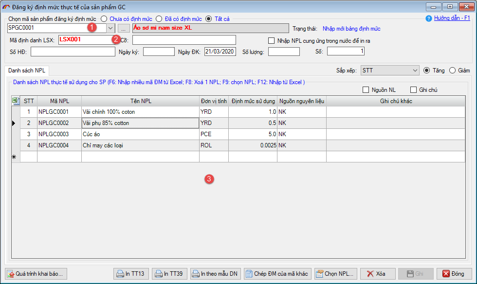
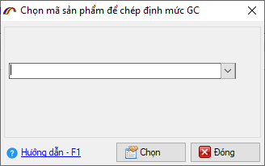
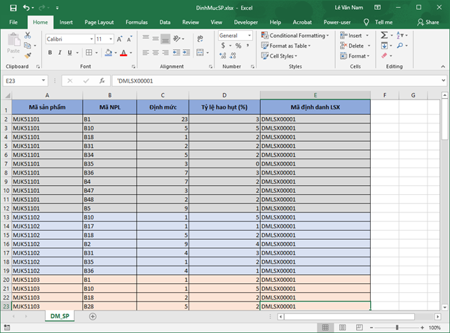
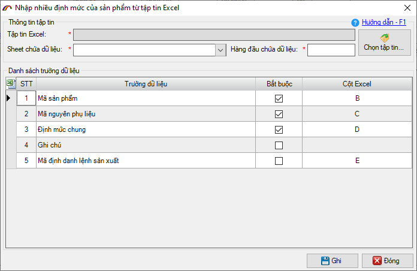
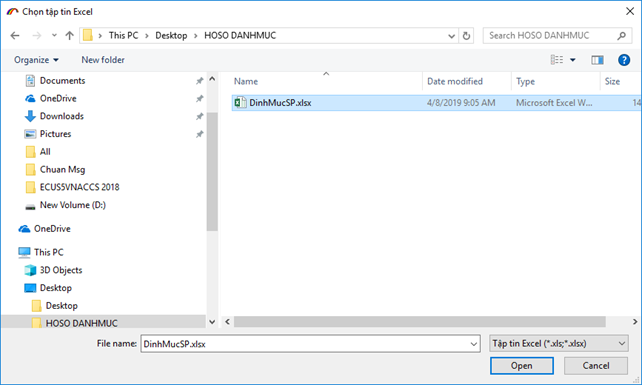
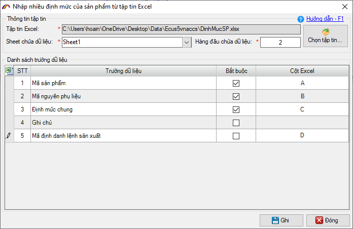
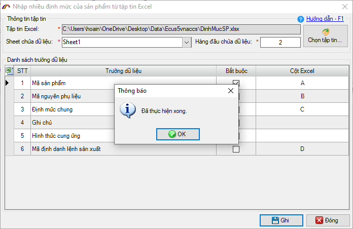
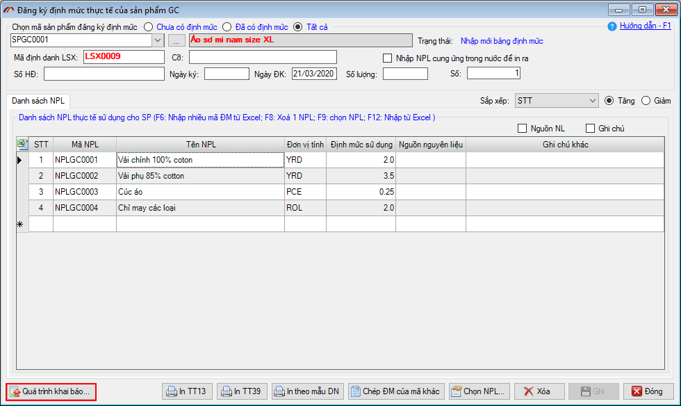
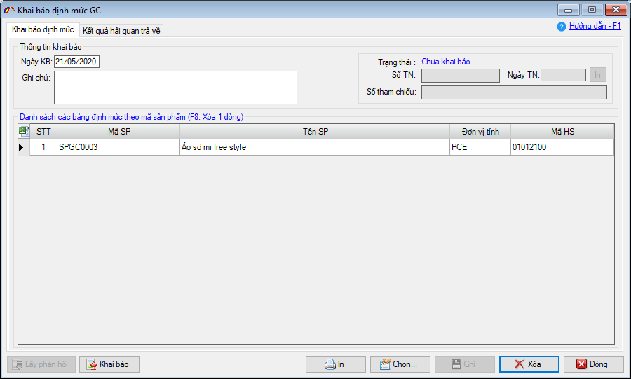

HƯỚNG DẪN KHAI BÁO ĐỊNH MỨC HĐGC
Bạn nhấn nút "Định mức" trên hợp đồng gia công hoặc vào menu "Loại hình / Gia công" và chọn mục "Đăng ký định mức".
Màn hình chức năng nhập định mức sản phẩm hiện ra như sau:

Bước 1: Chọn mã sản phẩm cần đăng ký định mức - (1)
Bước 2: Nhập vào mã định danh lệnh sản xuất (đây là mã do doanh nghiệp tự đặt và không được trùng nhau giữa các lần khai báo định mức (có thể khai chung 1 mã lệnh sản xuất cho nhiều định mức sản phẩm nhưng phải cùng một lần khai báo lên Hải quan) – (2)
Bước 3: Chọn danh sách nguyên phụ liệu cấu thành sản phẩm và nhập định mức – (3)
Sau khi nhập xong định mức cho 1 mã sản phẩm bạn nhấn nút "Ghi" để ghi lại thông tin, sau đó tiếp tục chọn mã sản phẩm khác.
Phần mềm hỗ trợ các tiện ích nhập liệu nhanh cho bảng định mức theo các cách sau đây:
Cách 1: Chép định mức của sản phẩm khác
Cách này sử dụng trong trường hợp sản phẩm B có định mức gần giống với sản phẩm A, trong khi đó sản phẩm A đã được nhập định mức.
Cách thực hiện như sau:
Bước 1: Chọn mã sản phẩm cần nhập định mức (ví dụ trên là chọn mã B)
Bước 2: Nhấn vào nút "Chép ĐM của mã khác" lúc này phần mềm sẽ hiện ra cửa sổ chọn:

Bước 3: Chọn đến sản phẩm đã có định mức cần sao chép, sau đó sửa lại cho phù hợp.
Cách 2: Nhập nhiều định mức từ file excel có sẵn, để thực hiện chức năng này bạn làm theo các bước như sau:
Bước 1: Chuẩn bị sẵn file excel chứa dữ liệu định mức các sản phẩm cần đưa vào (có thể theo mẫu như sau):

Bước 2: Trên form nhập định mức, nhấn phím F6 trên bàn phím máy tính để hiện thị cửa sổ import dữ liệu:

Bước 3: Nhấn nút "Chọn tập tin…" để tìm và chọn đến file excel đã có sẵn

Bước 4: Thiết lập thông số tên sheet và hàng đầu tiên chứa dữ liệu, các thông số trường dữ liệu tương ứng trên file excel. Như file excel ví dụ ở trên thì cấu hình như hình sau:

Cuối cùng nhấn nút "Ghi" để phần mềm đưa dữ liệu bảng định mức vào, thành công phần mềm sẽ thông báo như sau:

Sau khi nhập xong bảng định mức, để gửi lên Hải quan bạn nhấn vào nút "Quá trình khai báo" và nhấn tiếp "Khai báo mới" ở của sổ mới hiện ra:

Cửa sổ khai báo định mức sẽ hiện ra như sau:

Tại đây phần mềm sẽ hiển thị tất cả các mã sản phẩm vừa lập định mức và chưa được khai báo. Doanh nghiệp có thể nhấn nút "Ghi" sau đó nhấn vào "Khai báo" để gửi toàn bộ danh sách này lên Hải quan hoặc nhấn nút "Chọn" để trừ bớt các mã chưa khai lúc này (lưu ý: Trong cùng một Hợp đồng, nếu một mã Sản phẩm khai báo nhiều lần thì giữa các lần khai báo không được trùng số định danh lệnh sản xuất. Các định mức có cùng mã định danh lệnh sản xuất bạn nên khai báo cùng một lần).
Bạn khai báo và xác nhận khai báo đến khi có số tiếp nhận trả về từ hệ thống là hoàn tất việc khai báo định mức, hệ thống sẽ tự động duyệt theo quy định tại Thông tư 39.
Bản quyền © thuộc về Công ty TNHH Phát triển công nghệ Thái Sơn